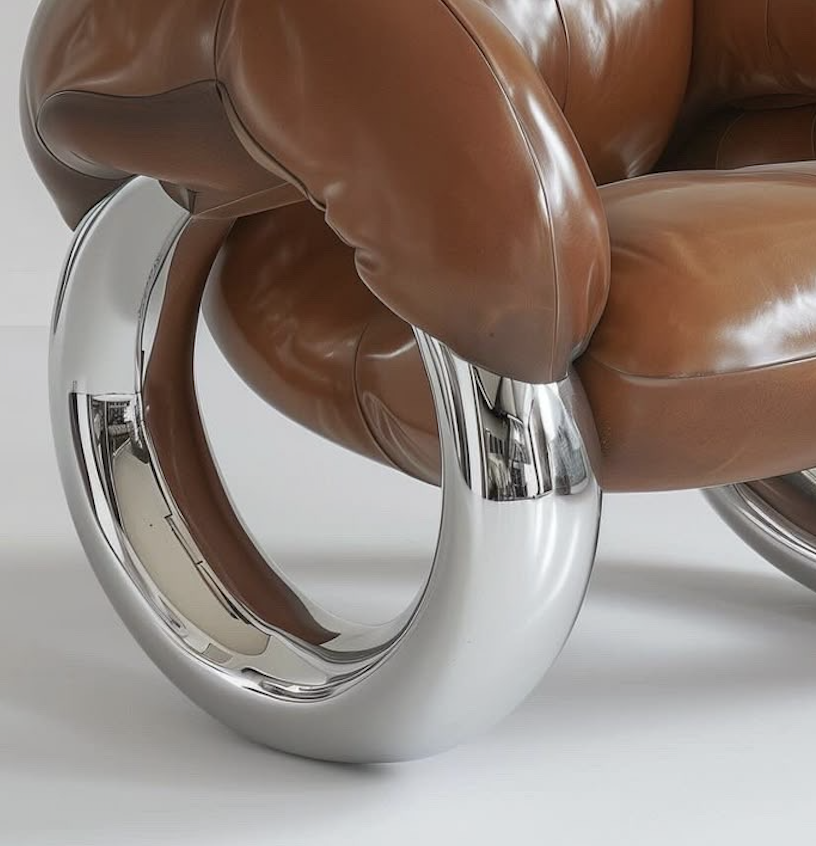
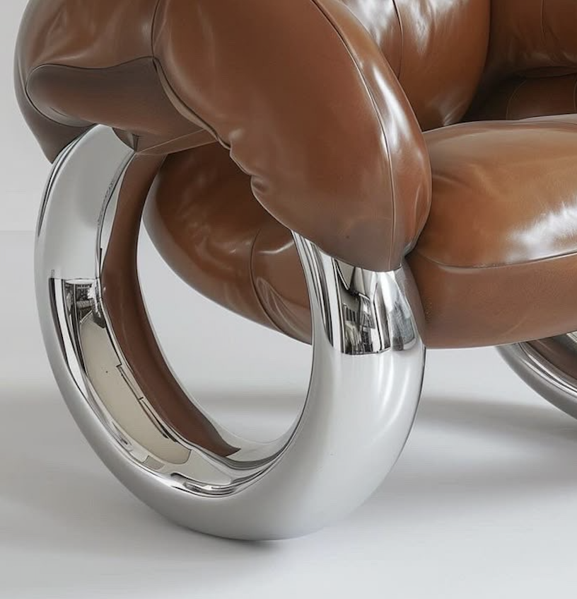

Éloi Verreaux
Daria Solano
Fauteuil "Astro-Luxe" (Modèle Chromos)
Édition : Ateliers Cosmopolis, France.
Période : Circa 1973.
Description : : Ce fauteuil, baptisé "Astro-Luxe", incarne l'apogée du design sensoriel et l'optimisme technologique des années 70.
Structure : L'assise et le dossier sont formés de boudins enveloppants, généreusement rembourrés de mousse haute densité, épousant une forme de cocon protecteur. Le revêtement est réalisé en Cuir d’Élite Cognac, traité pour une patine chaleureuse et un toucher velouté, contrastant radicalement avec la froideur des supports.
Base : La pièce repose sur une ingénieuse architecture de support composée de deux larges anneaux porteurs en alliage d'Aluminium Brossé, poli au miroir. Ces cercles, d'un éclat spectaculaire, créent l'illusion d'une lévitation et assurent une stabilité parfaite tout en maximisant l'effet sculptural de l'ensemble.
Dimensions : H. (Hauteur totale) : 75 cm, L. (Largeur) : 105 cm, P. (Profondeur) : 90 cm, Dia. (Diamètre des supports) : 48 cm